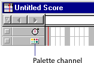
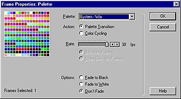

Using Director > Color, Tempo, and Transitions > Controlling color > Changing color palettes during a movie
Using Director > Color, Tempo, and Transitions > Controlling color > Changing color palettes during a movie |
Changing color palettes during a movie
The palette channel in the Score determines which palette is active for a particular frame in a movie. To define the palette that is active in a particular frame of a movie, use Modify > Frame > Palette. When the playback head reaches the frame with the palette change, Director switches to the new palette.
The settings in the palette channel have no effect on a movie playing in a Web browser. Do not use any of these settings for movies on the Web.
For a stand-alone disk-based movie that takes over the entire screen, changing palettes during a movie is a viable option for displaying 8-bit graphics with the best possible colors.
If you place a cast member that has its own custom palette on the Stage—and if it's the first cast member that has a different palette in the frame—Director automatically assigns the new palette to the palette channel. The new palette becomes the active palette unless you clear it from the palette channel or replace it with a different palette, and it remains in effect until you set a different palette in the palette channel.
Only one palette can be active at any time. If an 8-bit image appears with the wrong colors, it requires a different palette. See Solving color palette problems.
Director contains several color palettes. The Windows and Macintosh system palettes are the default selections. Web216 is nearly identical to the palettes used by Netscape Navigator and Microsoft Internet Explorer. Use it for any movie you plan to play in a browser. Any additional palettes you create or import appear as cast members.
While working on a movie, you can change the active palette in the authoring environment by choosing a new palette in the Color Palettes window. The palette that is active in the authoring environment while you work does not change the palette in the movie you're working on. Any settings in the palette channel reset the active palette as soon as the movie plays.
To specify a palette:
1 |
In the Score, do one of the following: |
Double-click the cell in the palette channel where you want the new palette setting to appear. |
|
Right-click (Windows) or Control-click (Macintosh) the cell in the effects channel where you want the new palette setting to appear, and then choose Palette from the Context menu. |
|
Select a frame in the palette channel and choose Modify > Frame > Palette. |
|
(If you don't see the palette channel, the effects channel is hidden. To display it, click the Hide/Show Effects Channel tool in the top right of the score window.)
 |
|
2 |
Select the options you want to use in the Frame Properties: Palette dialog box.
 |
Choose a new palette. |
|
Specify how you want Director to manage the palette change. For example, to hide a palette change within a fade, first choose a new palette from the pop-up menu. Select the Palette Transition option and then select Fade to Black or Fade to White. Use the Rate slider to set the speed of the fade. |
|
To stop the movie while the palette changes, first choose a new palette from the Palettes pop-up menu. Select the Palette Transition option and then select Between Frames. Use the Rate slider to set the speed of the transition. |
|
3 |
Click Set. |
The palette you chose now appears in the cell you selected in the Score's palette channel. The setting remains in effect in the movie until you set a different palette in the palette channel. |
|